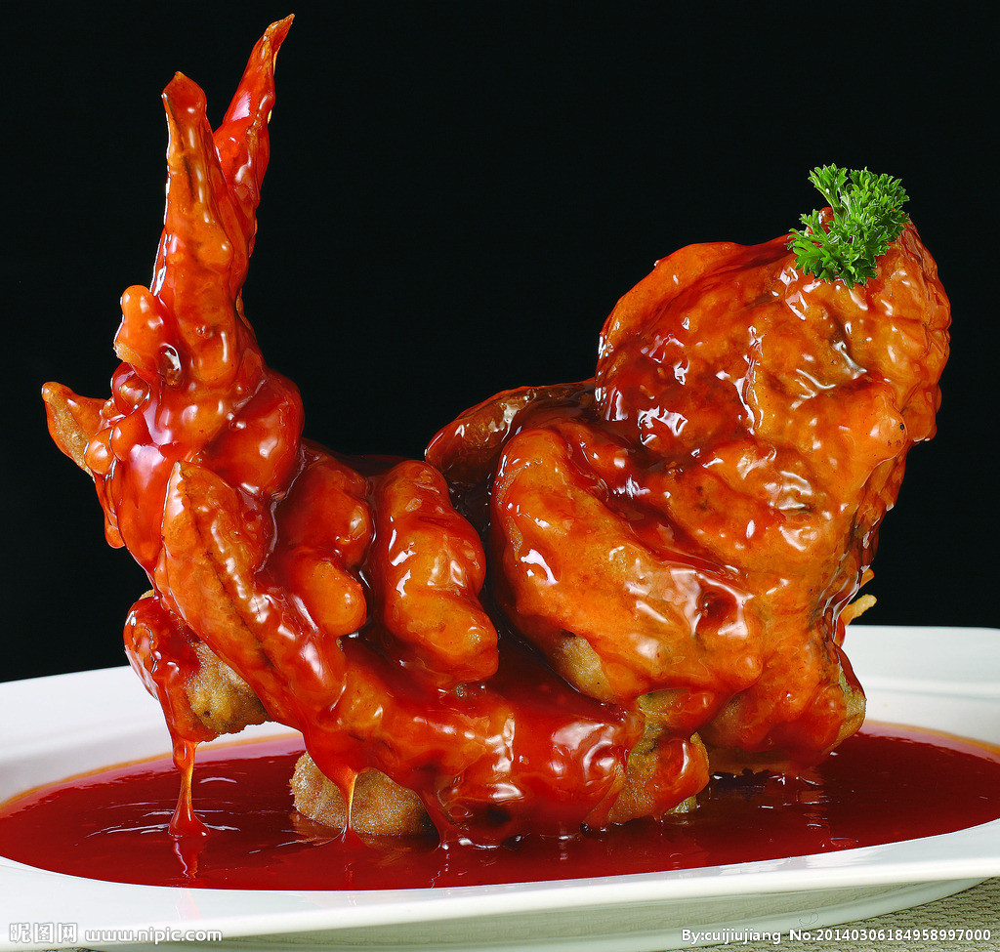
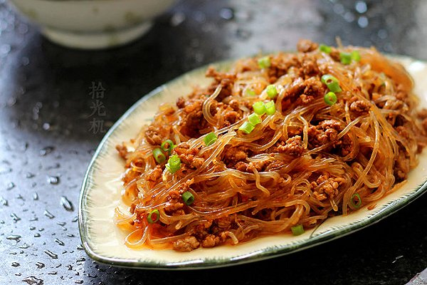

这道菜名为“黄焖鸡”，色香味美，口感鲜嫩透味不粘腻，香味浓郁。无论口感，视觉，色泽都属上品，令人回味无穷，百吃不厌。鸡肉选材鲜嫩三黄鸡鸡腿肉，做出的黄焖鸡嫩滑多汁，汁味和香味浸入鸡肉内部，色泽均匀。用土制砂锅烧制，砂锅内沸腾，香气直入鼻中，鸡块滚烫，色度与亮度呈现最佳状态。同。
同时，鸡肉含有对人体生长发育有重要作用的磷脂类，是中国人膳食结构中脂肪和磷脂的重要来源之一。鸡肉对营养不、贫血、虚弱等有很好的食疗作用。祖国医学认为，鸡肉有温中益气、补虚填精、健脾胃、活血脉、强筋骨的功效。黄焖鸡中含有生姜辣椒等，更可有祛寒除湿的效果。因此，为广大食客朋友们力荐这道菜！

清蒸蟹粉狮子头是一道江苏扬州的汉族名菜， 属于淮扬菜系，狮子头肥嫩异常，蟹粉鲜香，青菜酥烂清口，食后清香满口，齿颊留香。

以海南岛文昌鸡为主料，配以火腿 、鸡肝、郊菜，经煮、蒸、炒而成。此菜造型美观，芡汁明亮，肉质滑嫩，香味甚浓，肥而不腻。

香辣虾是一道汁浓、麻辣味浓，肉质紧韧爽脆的名菜，味道鲜美，回味无穷。虾的肉质肥嫩鲜美，食之既无鱼腥味，又没有骨刺，老幼皆宜，备受青睐。

糖醋鲤鱼
据说"糖醋鲤鱼"最早始于黄河重镇--泺口镇。糖醋鲤鱼色泽金黄，外焦里嫩，香甜酸醇。黄河鲤鱼不仅肥嫩鲜美，而且金鳞赤尾，形态可爱，是宴会上的佳肴。黄河鲤鱼的肉味纯正，鲜嫩肥美，
梅菜扣肉
肉质软烂，肥而不腻，梅菜浓郁芳香。当你咀嚼一块，满嘴流油的时候，你会感觉它一点不肥腻。梅菜吸油，五花肉又会带着梅菜的清香，松仁的醇香，梅菜、松仁和肥五花肉的搭配真的可以说是恰到好处。

蚂蚁上树
蚂蚁上树是一道传统名菜，主料为粉丝和猪肉末。口味清淡，爽滑美味，色泽红亮，
提交评价
您的电子邮件地址将不会被公布，需要的字段被标记 *